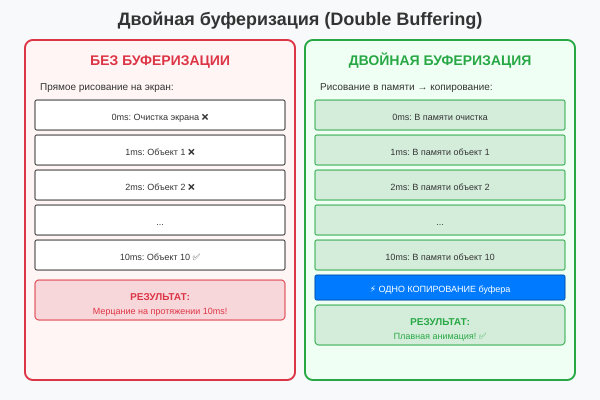
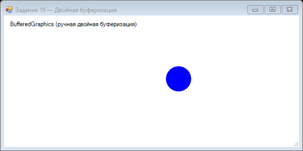

Урок 3.1: Двойная буферизация
📌 Ключевые моменты этого урока:
- Мерцание возникает из-за пошагового рисования на экране
- Двойная буферизация рисует в памяти, потом копирует на экран
- DoubleBuffered = true — один вызов для включения буферизации
- BufferedGraphics для более гибкого управления буферами
- С буферизацией анимация становится плавной и красивой
Проблема мерцания (Flickering)
Мерцание — это визуальный артефакт, когда пользователь видит ПРОЦЕСС рисования вместо готового результата. Происходит потому, что рисование идет медленнее, чем обновление экрана.
Как развивается мерцание:

Сравнение работы с и без двойной буферизации
Принцип двойной буферизации (Double Buffering)
Двойная буферизация решает мерцание используя прием "невидимого буфера". Вместо рисования напрямую на экран, используются два буфера:
Архитектура:
- Буфер 1 (видимый) — то, что видит пользователь на экране
- Буфер 2 (невидимый) — в оперативной памяти ОЗУ, скрыт от пользователя
- Рисование — все происходит в невидимый буфер
- Обмен — когда рисование закончено, буферы меняются местами (очень быстро)
- Результат — пользователь видит только готовые кадры
Процесс:
Кадр 1:
1. Рисуем в невидимый буфер в памяти
2. Готово → обмен указателей
3. Экран обновляет видимый буфер
Кадр 2:
1. Рисуем в новый невидимый буфер
2. Готово → обмен указателей
3. Экран обновляет видимый буфер
... и так каждый кадрDoubleBuffered свойство
// Включение двойной буферизации для формы
this.DoubleBuffered = true;
// Или в конструкторе
public Form1()
{
InitializeComponent();
this.DoubleBuffered = true;
}BufferedGraphics
Для более сложных случаев используйте BufferedGraphics:
private BufferedGraphicsContext context;
private BufferedGraphics buffer;
public Form1()
{
InitializeComponent();
context = BufferedGraphicsManager.Current;
context.MaximumBuffer = new Size(this.Width + 1, this.Height + 1);
buffer = context.Allocate(this.CreateGraphics(),
new Rectangle(0, 0, this.Width, this.Height));
}
private void Form1_Paint(object sender, PaintEventArgs e)
{
// Рисуем в буфер
Graphics g = buffer.Graphics;
g.Clear(Color.White);
// Ваш код рисования
g.DrawEllipse(Pens.Black, 50, 50, 100, 100);
// Копируем буфер на экран
buffer.Render(e.Graphics);
}📝 Пример задания — ручная двойная буферизация (Task19)
Программа явно управляет BufferedGraphics: выделяет буфер при загрузке и ресайзе, рисует в него, а в Paint копирует на экран. Это демонстрирует полный контроль над двойной буферизацией:
using System;
using System.Drawing;
using System.Windows.Forms;
namespace CSharpGraphicsApp
{
public class Task19_DoubleBuffering : Form
{
private BufferedGraphics bufferedGraphics;
private readonly Timer timer = new Timer();
private int x = 0;
public Task19_DoubleBuffering()
{
Text = "Задание 19 — Двойная буферизация";
Size = new Size(600, 300);
BackColor = Color.White;
DoubleBuffered = false; // выключаем встроенную — используем ручную
Paint += Form1_Paint;
Resize += (s, e) => AllocateBuffer();
timer.Interval = 30;
timer.Tick += Timer_Tick;
timer.Start();
Load += (s, e) => AllocateBuffer();
FormClosed += (s, e) =>
{
timer.Stop();
bufferedGraphics?.Dispose();
};
}
private void AllocateBuffer()
{
bufferedGraphics?.Dispose();
var context = BufferedGraphicsManager.Current;
bufferedGraphics = context.Allocate(CreateGraphics(), ClientRectangle);
}
private void Timer_Tick(object sender, EventArgs e)
{
x += 5;
if (x > ClientSize.Width) x = -50;
Invalidate();
}
private void Form1_Paint(object sender, PaintEventArgs e)
{
if (bufferedGraphics == null) return;
Graphics g = bufferedGraphics.Graphics;
g.Clear(Color.White);
g.SmoothingMode = System.Drawing.Drawing2D.SmoothingMode.AntiAlias;
g.FillEllipse(Brushes.Blue, x, 100, 50, 50);
g.DrawString("BufferedGraphics (ручная двойная буферизация)",
SystemFonts.DefaultFont, Brushes.Black, 10, 10);
bufferedGraphics.Render(e.Graphics);
}
}
}Практическое задание
Задание 1: Создание анимированного приложения
- Создайте новый проект Windows Forms
- Добавьте компонент Timer (из Toolbox → Components)
- В коде формы добавьте поля для позиции круга:
private int ballX = 50; private int ballY = 50; private int ballSpeedX = 3; private int ballSpeedY = 3; - В конструкторе настройте таймер:
public Form1() { InitializeComponent(); timer1.Interval = 16; // ~60 FPS timer1.Tick += Timer1_Tick; timer1.Start(); } - Добавьте обработчик Tick:
private void Timer1_Tick(object sender, EventArgs e) { // Обновляем позицию ballX += ballSpeedX; ballY += ballSpeedY; // Отскок от стенок if (ballX <= 0 || ballX >= this.ClientSize.Width - 20) ballSpeedX = -ballSpeedX; if (ballY <= 0 || ballY >= this.ClientSize.Height - 20) ballSpeedY = -ballSpeedY; // Перерисовываем this.Invalidate(); } - Добавьте обработчик Paint:
private void Form1_Paint(object sender, PaintEventArgs e) { Graphics g = e.Graphics; g.FillEllipse(Brushes.Red, ballX, ballY, 20, 20); } - Запустите приложение (F5)
Задание 2: Включение двойной буферизации
- В конструкторе формы добавьте:
this.DoubleBuffered = true; - Запустите приложение и обратите внимание на отсутствие мерцания
- Теперь временно закомментируйте эту строку:
// this.DoubleBuffered = true; - Запустите снова и сравните — должно быть заметно мерцание
- Раскомментируйте строку обратно
Задание 3: Использование BufferedGraphics
- Добавьте поля для буфера:
private BufferedGraphicsContext context; private BufferedGraphics buffer; - В конструкторе инициализируйте буфер:
public Form1() { InitializeComponent(); context = BufferedGraphicsManager.Current; context.MaximumBuffer = new Size(this.Width + 1, this.Height + 1); buffer = context.Allocate(this.CreateGraphics(), new Rectangle(0, 0, this.Width, this.Height)); this.DoubleBuffered = true; timer1.Interval = 16; timer1.Tick += Timer1_Tick; timer1.Start(); } - Измените обработчик Paint:
private void Form1_Paint(object sender, PaintEventArgs e) { // Рисуем в буфер Graphics g = buffer.Graphics; g.Clear(Color.White); g.FillEllipse(Brushes.Red, ballX, ballY, 20, 20); // Копируем буфер на экран buffer.Render(e.Graphics); } - Запустите приложение и проверьте результат
Задание по аналогии: Анимация с ручным буфером (Task19)
По аналогии с Task19_DoubleBuffering создайте форму с анимацией, используя BufferedGraphics вручную.
- Создайте форму с
DoubleBuffered = false— вы будете управлять буфером самостоятельно. - Добавьте поле
private BufferedGraphics bufferedGraphicsи методAllocateBuffer(), который выделяет буфер черезBufferedGraphicsManager.Current.Allocate(). - Вызовите
AllocateBuffer()в событииLoadи приResize. - Добавьте
Timer(интервал 30 мс), который изменяет позицию объекта и вызываетInvalidate(). - В обработчике
Paint: рисуйте вbufferedGraphics.Graphics, затем копируйте на экран черезbufferedGraphics.Render(e.Graphics). - В
FormClosedостановите таймер и вызовитеbufferedGraphics.Dispose().
Пример результата выполнения задания:

Скриншот программы (Task19)
Пример результата выполнения задания:
Скриншот программы (Task19)
Resize — старый буфер больше не соответствует размеру клиентской области.
Проверка знаний
Ответьте на вопросы, чтобы проверить, насколько хорошо вы усвоили материал: